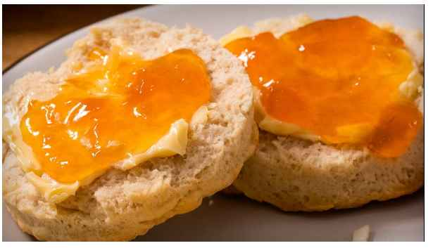

Basic Biscuits

Description
This homemade biscuit recipe uses simple ingredients and baking powder as the leavening. The biscuits turn out golden brown and super tender inside.
Ingredients
- 2 cups all-purpose flour
- 1 tablespoon baking powder
- ½ teaspoon salt
- ½ cup shortening
- ¾ cup cold milk
Instructions
- Gather all ingredients and preheat oven to 450 degrees F (230 degrees C).
- In a large mixing bowl sift together flour, baking powder and salt.
Cut in shortening with fork or pastry blender until mixture resembles coarse crumbs.
- Pour milk into flour mixture while stirring with a fork. Mix in milk until dough is soft, moist and pulls away from the side of the bowl.
- Turn dough out onto a lightly floured surface and knead dough briefly, 5 to 7 times.
- Roll dough out into a 1/2 inch thick sheet and cut out biscuits with a floured cookie cutter.
Press together unused dough and repeat rolling and cutting procedure.
- Place biscuits on ungreased baking sheets and bake in preheated oven until golden brown, about 10 minutes.